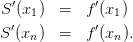
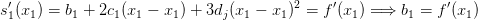
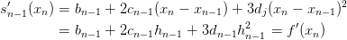
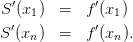
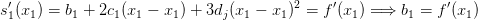
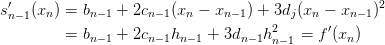
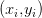
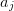
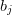
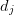

6.6 Interpolação cúbica segmentada - spline
Dado um conjunto de  pontos
pontos  tais que
tais que  , ou
seja, as abscissas são distintas e estão em ordem crescente; um spline
cúbico que interpola estes pontos é uma função
, ou
seja, as abscissas são distintas e estão em ordem crescente; um spline
cúbico que interpola estes pontos é uma função  com as seguintes
propriedades:
com as seguintes
propriedades:
- Em cada segmento
![[xj,xj+1]](main2765x.png) ,
, 
 é um polinômio
cúbico.
é um polinômio
cúbico.
- para cada ponto,
 , i.e., o spline interpola os pontos dados.
, i.e., o spline interpola os pontos dados.
 , i.e., é função duas vezes continuamente diferenciável.
, i.e., é função duas vezes continuamente diferenciável.
Da primeira hipótese, escrevemos
![s(x) = sj(x),x ∈ [xj,xj+1], j = 1,...,n - 1](main2770x.png)

 polinômios cúbicos.
polinômios cúbicos.
Veremos que a simples definição de spline produz  equações
linearmente independentes:
equações
linearmente independentes:
 |
Como
 | (6.1) |
e
 | (6.2) |
temos, para  , as seguintes equações
, as seguintes equações
 |
Por simplicidade, definimos

 | (6.3) |
que podem ser escrita da seguinte maneira
 | (6.4) |
 | (6.5) |
 | (6.6) |
Trocando o índice  por
por  na terceira equação (6.3),
na terceira equação (6.3), 
 | (6.7) |
e, portanto,
 | (6.8) |
Fazendo as simplificações, obtemos:
 | (6.9) |
É costumeiro acrescentar a incógnita  ao sistema. A incógnita
ao sistema. A incógnita  não está
relacionada a nenhum dos polinômios interpoladores. Ela é uma construção
artificial que facilita o cálculo dos coeficientes do spline. Portanto, a equação
acima pode ser resolvida para
não está
relacionada a nenhum dos polinômios interpoladores. Ela é uma construção
artificial que facilita o cálculo dos coeficientes do spline. Portanto, a equação
acima pode ser resolvida para  .
.
Para determinar unicamente os  coeficientes
coeficientes  precisamos acrescentar
duas equações linearmente independentes às
precisamos acrescentar
duas equações linearmente independentes às  equações dadas por (6.9).
Essas duas equações adicionais definem o tipo de spline usado.
equações dadas por (6.9).
Essas duas equações adicionais definem o tipo de spline usado.
6.6.1 Spline natural
Uma forma de definir as duas equações adicionais para completar o sistema (6.9) é impor condições de fronteira livres (ou naturais), ou seja,
 | (6.10) |
Substituindo na equação (6.2)


 e
e  juntamente com as equações (6.9) formam um
sistema de
juntamente com as equações (6.9) formam um
sistema de  equações
equações  , onde
, onde
 | (6.11) |
 | (6.12) |
Observe que a matriz  é diagonal dominante estrita e, portanto, o
sistema
é diagonal dominante estrita e, portanto, o
sistema  possui solução única. Calculado
possui solução única. Calculado  , os valores dos
, os valores dos  ,
,
 e
e  são obtidos diretamente pelas expressões (6.4), (6.6) e (6.5),
respectivamente.
são obtidos diretamente pelas expressões (6.4), (6.6) e (6.5),
respectivamente.
 ,
,  ,
,  e
e  .
.
Solução. O spline desejado é uma função definida por partes da forma:
 | (6.13) |
Os coeficientes  ,
,  e
e  resolvem o sistema
resolvem o sistema  , onde
, onde
 |
 |
Observe que  é um coeficiente artificial para o problema. A solução é
é um coeficiente artificial para o problema. A solução é  ,
,  e . Calculamos os demais coeficientes usando as
expressões (6.4), (6.6) e (6.5):
,
,  e . Calculamos os demais coeficientes usando as
expressões (6.4), (6.6) e (6.5):


 |

6.6.2 Spline fixado
Alternativamente, para completar o sistema (6.9), podemos impor condições de contorno fixadas, ou seja,

 | (6.14) |
e
 | (6.15) |
Usando as equações (6.5) e (6.6) para  e
e  , temos:
, temos:
 | (6.16) |
e
 | (6.17) |
Essas duas equações juntamente com as equações (6.9) formam um sistema de
 equações
equações  , onde
, onde
 |
 |
Observe que a matriz  é diagonal dominante estrita e, portanto, o
sistema
é diagonal dominante estrita e, portanto, o
sistema  possui solução única. Calculado
possui solução única. Calculado  , os valores dos
, os valores dos  ,
,
 e
e  são obtidos diretamente pelas expressões (6.4), (6.6) e (6.5),
respectivamente.
são obtidos diretamente pelas expressões (6.4), (6.6) e (6.5),
respectivamente.
Exemplo 6.6.2. Construa um spline cúbico com fronteira fixada que
interpola a função  nos pontos
nos pontos  ,
,  ,
,  ,
,  e
e  .
.
O spline desejado passa pelos pontos  ,
,  ,
,  ,
,  e
e
 e tem a forma:
e tem a forma:
 |
Observe que ele satisfaz as condição de contorno  e
e
 .
.
Os coeficientes  ,
,  ,
,  e
e  resolvem o sistema
resolvem o sistema  , onde:
, onde:
 |
 |
Aqui  é um coeficiente artificial para o problema. A solução é
é um coeficiente artificial para o problema. A solução é  ,
,
 ,
,  ,
,  e
e  . Calculamos os
demais coeficientes usando as expressões (6.4), (6.6) e (6.5):
. Calculamos os
demais coeficientes usando as expressões (6.4), (6.6) e (6.5):


 |
6.6.3 Resumo sobre Splines
Dado um conjunto de pontos ,  , um spline cúbico é a
seguinte função interpoladora definida por partes:
, um spline cúbico é a
seguinte função interpoladora definida por partes:
 |
Definindo-se  , os coeficientes
, os coeficientes  ,
,  , são solução
do sistema linear
, são solução
do sistema linear  , onde:
, onde:
![|--------------------------------------|--------------------------------------|
|Spline Natural |Spline Fixado |
|s′′(x ) = 0 e s′′ (x ) = 0 |s′(x ) = f ′(x ) e s′ (x ) = f′(x ) |
|-1--1-(------n-1--n-------------------|-1--1-(-----1----n-1--n--------n------|
| ||| 1 ,j = i = 1 | ||| 2h1 ,j = i = 1 |
| |||| | |||| |
| |||| hi-1 ,j = i- 1,i < n | |||| hi-1 ,j = i- 1 |
| |||{ | |||{ |
|ai,j = 2(hi + hi-1) ,j = i,1 < i < n |ai,j = 2(hi + hi- 1) ,j = i,1 < i < n |
| ||| hi ,j = i+ 1,i > 1 | ||| hi ,j = i+ 1 |
| |||| | |||| |
| |||| 1 ,j = i = n | |||| 2hn -1 ,j = i = n |
| |||( | |||( |
| 0 ,caso contrário. | 0 ,caso contrário. |
| | |
| ( | ( |
| |||| 0 ,i = 1 | |||| 3y2-hy1- 3f′(x1) ,i = 1 |
| { yi+1- yi yi- yi-1 | { yi+11-yi yi-yi-1 |
|zi = || 3--hi-- - 3-hi-1- ,1 < i < n |zi = || 3--hi-- - 3-hi-1- ,1 < i < n |
| ||( 0 ,i = n | ||( 3f′(x )- 3 yn--yn-1- ,i = n |
----------------------------------------------------n------hn-1----------------](main2889x.png) |
os coeficientes ,  e ,  , são calculados conforme segue:
, são calculados conforme segue:
* As versões do livro disponíveis no site podem estar desatualizadas, veja a versão PDF atual no repositório GitHub oficial do projeto.
- IME - UFRGS